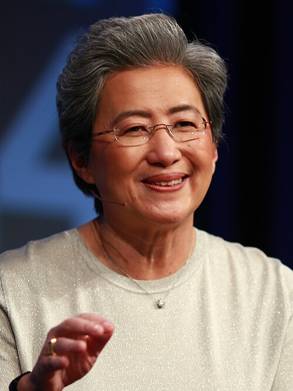

Lisa Tzwu-Fang Su ( chino :蘇姿丰; pinyin : Sū Zīfēng ; taiwanés : Soo Tsu-hong ; nacida el 7 de noviembre de 1969) es una ejecutiva de negocios, científica informática e ingeniera eléctrica taiwanesa y estadounidense que ha sido presidenta y directora ejecutiva de la empresa estadounidense de semiconductores AMD desde 2014.
Su fue nombrada presidenta y directora ejecutiva de AMD en octubre de 2014, después de unirse a la compañía en 2012 y ocupar cargos como vicepresidenta sénior de las unidades de negocio globales de AMD y directora de operaciones. Anteriormente formó parte de la junta directiva de Cisco Systems y actualmente forma parte de la junta directiva de la Asociación de la Industria de Semiconductores de EE. UU. , además de ser miembro del Instituto de Ingenieros Eléctricos y Electrónicos (IEEE).